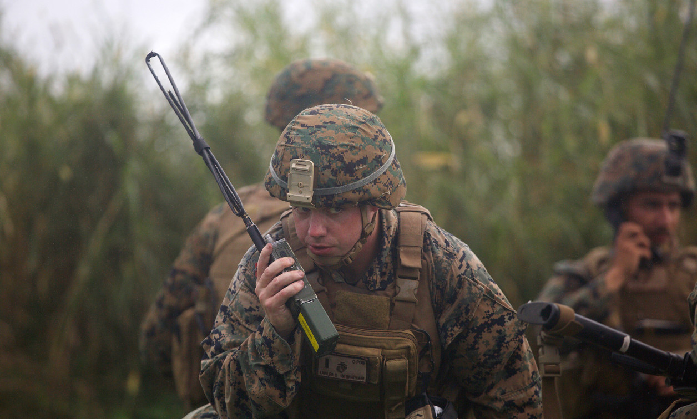
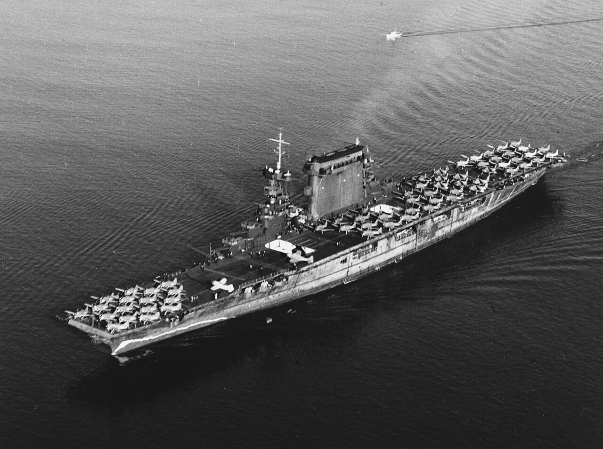
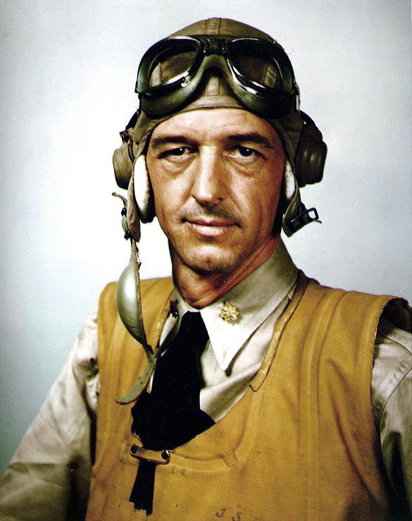
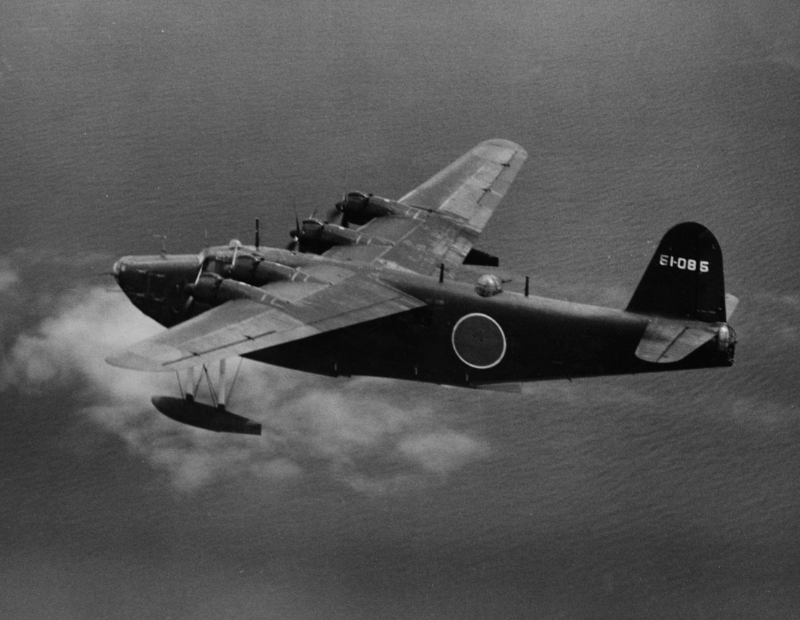

레이더 개발 이야기 (52) - USS Lexington의 실전 사례
게시: 2023-10-26T06:30:41+09:00
<왜 영화 속 미군들은 무전기만 들면 yes나 no를 말하지 못하나> 혼란스럽고 긴박한 전투 상황에서도 명확한 메시지 전달이 되기 위해서는 메시지 자체가 짧아야 했고, 그러자면 용어가 통일되어야 했음. 그렇다고 yes 또는 no처럼 너무 짧은 단어는 통화감이 좋지 않고 자주 지직거리는 무전기에서는 오히려 제대로 안 들릴 가능성이 있었으므로, 좀더 명확한 단어가 되어야 했음. 그래서 yes나 no 대신 affirmative와 negative를 쓰기로 했음. 이 모든 무선 용어집은 미해군에서 독자 개발한 것이 아니고, 레이더 실전에서의 선배인 로열 네이비에서 작성한 것을 그대로 가져온 것. 이는 향후 로열 네이비와 합동 작전을 벌일 때에도 유용하게 작용.

(미군들이 무전기로 대화할 때 yes나 no 대신 affirmative, negative로 이야기하는 장면을 영화에서 많이 보셨을 거임.)
그런 무전 용어 몇 가지를 소개하면 아래와 같음. 이 용어들을 사용하면 전달하고자 하는 문장이 훨씬 짧아지므로 교신 자체가 빨라지고 명확해짐. Altitude - 적기의 고도. feet 단위로 말함. Angels - 아군기의 고도. 이건 1천 feet 단위로 말함. Saunter - 최대 연비 속도(max endurance speed)로 비행하라 Liner - 최대 항속 거리 속도(max cruising range speed)로 비행하라 Buster - 장시간 지속 가능한 최대 속도(max sustained speed)로 비행하라 Gate - (그 속도로 장시간 날면 엔진이 손상될 정도의) 순간 최대 속도(max possible speed)로 비행하라 Vector - 나침반 자북 기준 몇 도로 방향을 바꾸라고 할 때 사용. 3자리로 말함. Steer - 나침반 자북 기준으로 적기가 있는 방향을 지칭할 때 사용. 3자리로 말함. Bogey - 미확인 항공기. 아군기일 가능성도 있음. Bandit - 확인된 적기. Boxcars - 중폭격기. Fishes - 뇌격기. Shads - 초계기. Ammo Minus - 탄약 잔량이 절반 이하. Ammo Plus - 탄약 잔량이 절반 이상. Ammo Zero - 탄약 다 떨어짐. What State? - 연료와 탄약의 잔량을 보고하라. Pancake-Land - 탄약 재보급을 위해 착함하고자 한다. Pancake-Hurt - 부상 또는 기체 파손으로 인해 착함하고자 한다. Splashed - 적기 격추. 반드시 그 뒤에 어떤 기종(전투기? 폭격기?)을 몇 대 격추했다고 말해야 함. Grand Slam - 교전했던 적 편대를 모조리 격추. Affirmative - Yes. Roger - 너의 메시지를 다 들었음. Wilco - (Will comply) 너의 지시 내용을 다 듣고 이해했으며 그에 따르겠다. Skit It - 공격하지 말라. Salvoes - (함대에서) 대공포 사격을 시작하려 한다. Heads Up - 적기가 나를 지나쳐 갔다. Hey Rube - 지원이 필요하다. <그걸 지들이 어떻게 알아??> 1942년 2월 20일, 라바울 공습에 나선 USS Lexington (CV-2)에도 CXAM 레이더가 달려 있었음. 그러나 2천7백이 넘는 승조원들 중 항모의 함교 위에 달려있는 침대 스프링 프레임 같은 안테나가 뭐하는 물건인지 아는 사람은 극소수. 일단 함장과 부함장(XO)은 당연히 알고 있었지만, 그 외에는 요격기 관제사(fighter director officer, FDO)인 Frank F. “Red” Gill 대위와 2명의 보조 관제사 소위들, 그리고 역시 2명의 부사관 레이더 운용사, 그리고 4명의 레이더 정비사들 뿐. 그래서 이들이 거의 100km 떨어진 하늘에 미확인 항공기가 나타났으니 그쪽으로 CAP(Combat Air Patrol)을 보내겠다고 함교에 보고하면, 레이더라는 개념 자체를 몰랐던 함교의 당직 사관은 거의 믿을 수 없다는 반응이었다고.

(미해군 2번째 항모인 USS Lexington (CV-2). 진주만 직전인 1941년 10월의 모습. 비행갑판 앞쪽에 주기된 함재기들은 Brewster F2A 전투기, 중간에는 Douglas SBD 급강하 폭격기, 뒤쪽에는 Douglas TBD-1 뇌격기. 함수 아래 부분에 페인트로 가짜 파도가 그려져 있는 것이 보이는데, 이는 잠수함으로부터 항모의 항진 속력을 속이기 위한 얕은 수. 전체적으로 아직 위장 페인트칠(dazzle camouflage)이 미완성인 상태.) 2명의 소위와 2명의 부사관 레이더 운용사들은 번갈아 가며 레이더 안테나 바로 밑에 위치한 좁은 레이더 운용실(radar compartment)에 1명이 근무. 나머지는 저 아래에 있는 좁은 항공 상황실(air plot)에서 근무. 레이더 운용실과 항공 상황실은 딱 1대의 전화선으로 연결되어 있었는데, 위에서 레이더 화면 상황을 전화로 읽어주면, 밑에서는 전에 설명한 DRT (Dead Reckoning Tracer) 위에 그 표적을 마킹하고 추적하며 속도와 방향 등을 계산. 이 좁은 방에는 관제사인 "레드" 길 대위도 함께 근무하는데, 길 대위는 본인도 지난 10년간 조종사로 근무했던 사람. 그날 아침, 멀리서 뭔가를 발견한 레이더 운용실과 항공 상황실 사이의 전화 통화 내용을 보면 아래와 같음. 레이더실 : "plot-radar" 상황실 나와라, 여기는 레이더실. 상황실 : "plot aye" 여기는 상황실. (aye는 해군에서 전통적으로 yes 대신 사용하는 단어) 레이더실 : "Air target bearing two five one degrees, range fifty-two miles." 항공기 발견, 방위각 251도, 거리는 52마일. 그 방향에서는 아군기가 존재하지 않는 구역이므로 아마도 적기. 관제사 길 대위는 즉각 CAP을 파견하여 적기 여부를 확인하기로 결정. <마법 수정구를 쥐고 있는 관제사> 하필 그쪽 구역에서 CAP을 치고 있던 편대장은 제로센에 맞서 싸울 전법인 'Thatch weave'를 만들어낸 장본인이자 태평양 전역에서 에이스로 이름을 날리게 될 John S. “Jimmy” Thatch 소령. 일본군 소굴인 라바울로 가고 있었으므로 엄격한 무선 침묵을 준수하느라 조용히 날고 있던 땟치 소령은 갑자기 무전기에서 길 대위의 목소리가 크게 들리면서 240도로 벡터링해서 35마일 날아가면 거기 적 정찰기가 있을 거라고 지시하는 것을 듣고 깜짝 놀랐다고.

(1942년 당시의 땟치 소령. 그 쟁쟁한 명성에 비해 격추한 적기의 수는 고작 6대로 다소 초라함. 이유는 미드웨이 전투 이후 땟치 소령은 비행 교관으로 차출되었기 때문. 그렇게 뛰어난 조종사를 교관으로 돌려 더 많은 조종사를 훈련시켰던 것이 미해군 승리 요인 중 하나. 땟치는 1945년 미주리 함상에서의 일본 항복 조인식에도 참석했고 4성 제독까지 승진했으며 75세까지 장수.)

( 가와사키 H8K 수상정. 장거리 정찰 및 폭격 겸용.)
그 위치로 가보니 비구름이 잔뜩 낀 하늘. 땟치 소령은 길 대위와 교신하며 그 구름 속에 적기가 있으니 들어가라는 지시를 받고 그에 따랐더니, 실제로 가와사키 H8K 수상정 폭격기가 보였음. 그러나 구름 속에서 다시 적기를 놓쳤는데, 이때 길 대위도 레이더에서도 적기를 놓침. 뜻하는 바는 적기가 저공으로 급강하했다는 것. 그래서 길 대위는 땟치에게 '적기가 급강하했을 것'이라고 알려줌. 레이더의 존재를 모르던 땟치는 반신반의하며 내려가 보니 정말 해면 300m 정도의 저공에 적기가 있었음. 간단히 격추. 땟치 소령은 정말 길 대위가 마법 수정구라도 가지고 있는 것이라고 의심했을 듯.
(사진은 반지의 제왕에 나오는 마법 수정구 Palantiri. 미국 정부 등에서 사용하는 빅 데이터 기반 정보 보안 회사인 Palantir (팔린티어)라는 회사의 이름도 이 마법 수정구의 이름에서 따왔다고.) <통화는 간단히> 땟치 소령 편대가 렉싱턴에 착함할 때 즈음 길 대위의 레이더는 북쪽에서 또 다른 미확인 항공기를 탐지. 이번에는 그 쪽 방향, 즉 '오렌지 섹션'에서 CAP을 치고 있던 스탠리 중위의 2기 편대를 그 쪽으로 요격 보냄. 그 교신 내용을 그대로 적으면 이러함. 길 대위 : Orange Section from Romeo — Vector three four three — Buster — Angels six. 로미오로부터 오렌지 섹션에게, 343으로 벡터, 버스터, 엔젤 6. 여기서 로미오는 관제사의 call sign. 343으로 벡터하라는 것은 나침반에서 343도, 즉 북북서로 날아가라는 뜻. 버스터는 지속가능한 최대 속도를 내라는 뜻. 엔젤 6는 아군기의 고도를 6천 피트로 유지하라는 뜻. 꽤 긴 내용인데 아주 간결하게 몇 단어 이야기하지 않고 전달하는 셈. 다만 가만히 보면 적기와의 거리가 어느 정도인지는 전달하지 않았음. 약 20마일을 날아간 스탠리의 편대는 역시 4개의 엔진이 달린 수상정을 발견하고 격추.
(다음 주에 계속)